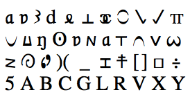
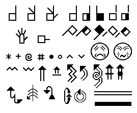
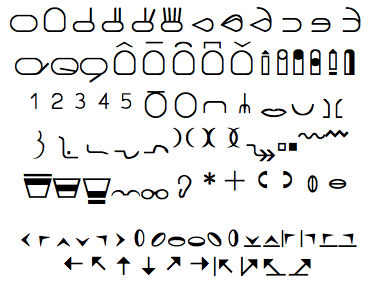
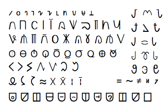
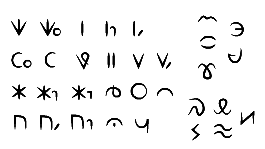
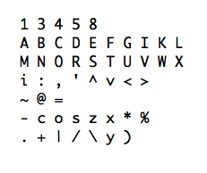
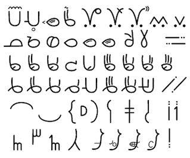
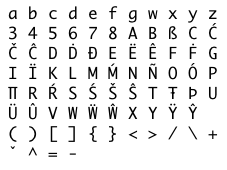
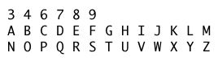
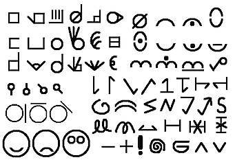

An early method of writing ASL was developed by a scholar at Gallaudet University named William Stokoe. Before Stokoe many people believed sign language in the United States was just a form of broken English. He helped to show that American Sign Language was (and is) a language of its own.
In 1965 he published an American Sign Language dictionary, and developed a writing system so signs could be looked up by location, handshape and movement. It was designed specifically for ASL, but does not include non-manual features and was not meant to be used for writing full sentences.
 These are some of the symbols used in Stokoe Notation. It is written left to right, and uses subscripts, superscripts and diacritics. Each sign is written location first, handshape second, and movement third.
Stokoe notation has been used mostly by linguists and researchers, and Stokoe notation fonts are available.
In 1974, a system for writing signed languages was developed by a dancer named Valerie Sutton, at the request of sign language researchers at the University of Copenhagen. Sutton had previously developed a system for writing dance movements.
SignWriting is designed to be able to write any signed language precisely, and uses many symbols, including symbols for writing non-manual features.
 These are some of the symbols used in SignWriting. It is written top to bottom in columns, and symbols can be rotated in 8 directions and placed anywhere in the writing area. Symbols indicating location, handshape, and movement are mixed together and arranged to create a picture of the sign.
In 1985, a group of researchers at the University of Hamburg developed a system for writing signed languages. It continues to be popular for academic purposes and has undergone four revisions.
HamNoSys is designed to be able to write any signed language precisely, and includes some support for non-manual features, but is not intended to be used for writing full sentences.
 These are some of the symbols used in HamNoSys. It is written left to right, and uses subscripts, superscripts and diacritics. Each sign is written in this order: handshape, orientation, location, actions.
In 1987, a linguist named Don Newkirk developed a writing system for ASL called SignFont at the Salk Institute in California and published the SignFont Handbook.
These are the symbols used in SignFont. It is written left to right. Each sign is written in this order: handshape, contact region, non-dominant handshape, non-dominant contact region, location, non-dominant location, movements. A set of shorter symbols are used somewhat like diacritics, providing additional specificity for the preceding full-size symbol. For the most part, each full-size symbol represents a single handshape, location, motion or non-manual marker.
Very little about the book, or the writing system, is available online. The author did have a website that documented his work, but it was taken down in 2002. A web-archive of the text of the page (with none of the symbols or images) is available here: Archive of SignFont Home Page.
Feedback?
In the 1990's, Deaf linguist Samuel Supalla started working on a simplified system for writing ASL. He based it off of a system called SignFont that had been developed at the Salk Institute in California.
He went on to work with the Canadian Cultural Society of the Deaf to launch a sign language dictionary for kids using the writing system, which he called ASL-phabet.
ASLphabet is designed for teaching children in conjunction with the dictionary, and uses a very small, carefully chosen set of symbols. It does not include non-manual features and was not intended to be used for writing full sentences.
 These are the symbols used in ASLphabet. There are 22 handshapes, 5 locations, and 5 movement types. It is written left to right. Each sign is written in this order: handshape, location, movement.
In 1997, computer-programmer and ASL student Travis Low documented his unfinished ideas for a writing system for ASL that would use only ASCII characters. The system is described (with examples) in a single page, which includes the disclaimer, "I'm hacking this out in public, [...] But I do want your comments."
These are the symbols used in Low's ASL Orthography. Capital letters and numbers represent handshapes, and can be combined to form "blended" handshapes. (For example, the I-Love-You handshape is IL.)
Symbols are written in this order for the dominant hand: location type (head or body), orientation, handshape, quality, location, motion.
For the non-dominant hand, symbols are written in this order: location type, location, orientation, quality, motion.
Starting in 2003, a method for writing ASL was developed by Deaf linguist Robert Arnold Augustus, who went on to make written ASL the focus of his master's thesis at Gallaudet University in 2007. He formally announced si5s to the world at Deaf Expo in July 2010.
si5s is designed to specifically for written ASL and includes symbols for non-manual features to allow the full grammar of ASL to be expressed in written form.
These are some of the symbols used in si5s. It is designed to be written on paper, so symbols can be rotated at any angle and placed anywhere in the writing space. In addition, there is no discrete set of movement arrows, so any arbitrary motion can be drawn by placing the appropriate end markers on a free-form line. Symbols and lines are arranged to form a picture of each sign, and the signs are arranged from left to right.
Books that teach si5s include the official si5s textbook by Robert Augustus, and How to Write ASL * by Adrean Clark. Incoming students at Gallaudet University will be required to learn si5s starting in 2012.
* Note that Adrean Clark's book teaches handshapes from the first edition of si5s, and that many handshapes changed in the second edition. Feedback?
In 2005, a linguist named David J. Peterson developed a computer-friendly system for writing invented sign languages precisely. He called it the Sign Language IPA, as a reference to the International Phonetic Alphabet which similarly allows the precise writing of spoken languages. SLIPA includes support for non-manual features but is not intended to be used for writing full sentences.
All the symbols used in SLIPA are available in Unicode, and in addition, SLIPA defines a way to represent any non-ASCII characters using ASCII. For example, Ü can be represented U:
It is written left to right and uses superscripts and diacritics in its Unicode form.
Linguist David J. Peterson is also the guy who created the Dothraki language for the TV series Game of Thrones.
In 2009, a computer-friendly system for writing ASL was developed by computer-programmer and ASL student Thomas Stone for taking notes in ASL. ASL Sign Jotting was designed to help "sound out" and look up new ASL vocabulary encountered on ASL videos.
 These are the symbols used in ASLSJ. The symbol set is limited to letters and numbers so that the system can be used anywhere. Most letters can have different meanings depending on the order in which they appear.
It is written left to right, and each sign "syllable" is written in the following in order (some parts are optional):
Nearhand handshape and orientation,
Nearhand location,
Farhand spacing direction,
Farhand handshape and orientation,
Movement,
Ending handshapes and orientations,
Repetition
The ASLSJ site includes a dictionary of signs so that students can look up a sign by the way it is made.
In 2010, Deaf educator Donald Grushkin developed a simplified system for writing ASL called SignScript. The full system is explained in ASL in a short series of youtube videos (with English subtitles).
These are some of the symbols used in SignScript. There are 46 handshapes, 12 locations, 29 symbols representing non-manual information, and 39 symbols related to movement. There are also 5 palm orientations; four have symbols and the fifth (the default palm orientation) is not written.
With some exceptions, symbols are assembled in this order: handshape, orientation, location, movement.
Glossing ASL means writing down a series of signs in the order they would be produced in ASL, but using English words to represent each sign. Additional information about the way each sign is made (including specific direction, motion, repetition, and non-manual features) is indicated using a few standard symbols, or simply by describing the inflection used.
The word chosen to represent each sign is what might be considered the "name" of the sign, and typically represents one meaning of the sign, though not necessarily the meaning of the sign in context. Gloss is intended to facilitate the discussion and analysis of ASL grammar, independent of the handshape, orientation, and location of each sign (for the most part).
t shake-head FINISH
GO-TO MOVIE I DONT-WANT PAH
K-N-E-E
CL:3[swerve and flip-over] #JOB
IX:Alice VISIT-ME++ QM-W
These are some examples of glosses signs and phrases. To indicate simultaneous elements of ASL, a horizontal line is placed over the gloss and non-manual features are described above the line.
Glossing has been used in studying and teaching ASL for years, and is used in many ASL textbooks. It is not typically used for personal written communication in ASL.
This system [referring to ASLphabet], much more than SignWriting, acknowledges the fact (rightly, we believe) that a written representation of a word does not need to be a recipe to produce it, but only to be sufficiently unique to act as a trigger to activate the relevant words in the reader’s mind.
A few of these systems allow for some degree of ambiguity. If the intended audience is signers who already know ASL, you only need to write enough information to make the sign recognizable. You don't have to specify every detail of how the sign is produced. (ASLphabet and ASL Glossing are designed for signers who already know ASL.)
Other systems are intended to communicate the specifics of the production of the sign to readers who may or may not know the sign themselves. (SignWriting, HamNoSys, and SLIPA are designed to be as precise as possible.)
Stokoe Notation, si5s, and ASLSJ lie somewhere in-between. They include a substantial degree of precision, but to some degree they rely on the reader knowing ASL. (ASLSJ was specifically designed to allow a variable amount of ambiguity. More common signs can be written succinctly, but less common signs may be written to convey more detail if desired.)
Some ambiguity exists in written English as well. Words that are spelled the same but pronounced differently can still be understood in the context of a sentence. Spoken English can also be written unambiguously in the International Phonetic Alphabet, a system designed for describing the exact sounds that are made when a language is spoken.
A Little Terminology
A Featural Alphabet is one that describes the production of exact sounds (or signs). Most writing systems deal with phonemes rather than exact sounds.
A Phoneme is an abstract unit of language that can be produced slightly differently in different contexts. A group of similar sounds that are perceived to be the same (within a language) are probably the possible pronunciations of a single phoneme. Linguists study the slight differences between sounds (for example, the "k" sound at the beginning of a word differs slightly from the "k" sound at the end of a word), but deal with phonemes when not specifically discussing pronunciation.
A Grapheme is an abstract unit of written language. (For example, the letter "c" in English is a grapheme that can make the "k" sound or the "s" sound). Symbols that look slightly different (for example, cursive versus print) but still mean the same letter are just different written forms of the same grapheme.
Why is there no way to write ASL? Because no writing system has been adopted by the ASL community. This could change.
Many of the systems that exist were not intended for public use, so it is not surprising that they have not become popular. For a writing system to gain acceptance in the community, it will need to be easy to learn and easy to use.
Only a few systems are being advocated for personal use. If written ASL interests you, learn them all!